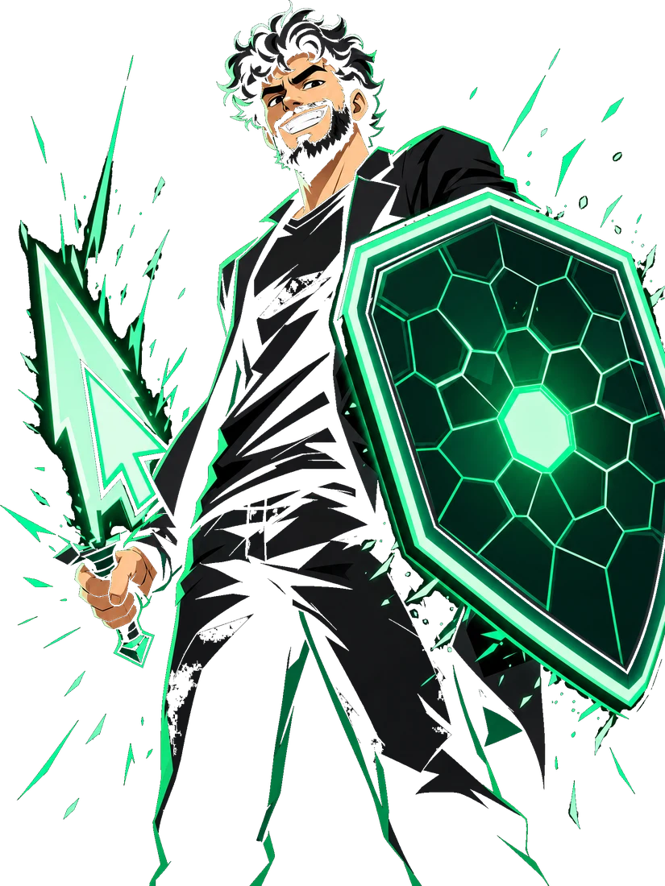
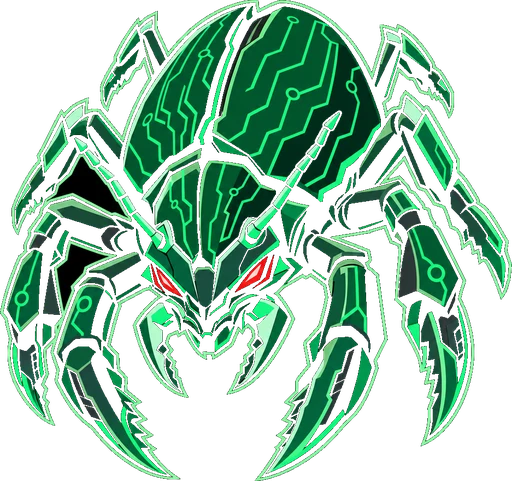

▶ PLAYER 1 · READY
SALVADORDILIO
DEVSECOPS / APPLICATION SECURITY
Eu transformo segurança em parte do jogo de engenharia: pipelines que barram vulnerabilidades antes do merge, automação que escala e cloud com guardrails — do commit à produção.

STAGE 01
Perfil do jogador
SALVADOR
ATRIBUTOS
- AppSec95
- DevSecOps95
- Automação90
- Cloud Security85
- Threat Modeling85
- Mentoria88
Classe: Guardião do Pipeline · Base: Maringá, PR — BR
STAGE 02
Loadout
Os equipamentos que uso em campo. Passe o mouse (ou toque) num slot.
STAGE 03
Quest log
Projetos e missões concluídas. Filtre por categoria.
Pipeline Blindado
Template de CI/CD com gates de SAST, SCA, secret scanning e scan de imagem — falha o build só no que importa.
REWARD −70% de vulns chegando em produção
Policy-as-Code Guardian
Políticas OPA/Conftest aplicadas a Terraform e Kubernetes, bloqueando configurações inseguras antes do apply.
REWARD Guardrails automáticos em toda a cloud
Threat Model Kit
Kit de modelagem de ameaças com STRIDE, templates e checklists para os times usarem já no design.
REWARD Segurança discutida antes da 1ª linha de código
Vuln Triage Bot
Automação que deduplica, prioriza por risco e abre tickets de vulnerabilidades direto para o time dono.
REWARD Menos ruído, MTTR menor
Secrets Hunter
Varredura contínua de segredos em repositórios e histórico git, com rotação guiada e alertas.
REWARD 0 credenciais expostas
Cloud Posture Radar
Painel de postura de segurança cloud com achados priorizados e trilha de correção por conta/time.
REWARD Visibilidade de risco em tempo real
STAGE 04
Conquistas
DESBLOQUEADA
DevOps Essentials Professional
CertiProf®
DESBLOQUEADA
Scrum Foundation Professional
CertiProf®
DESBLOQUEADA
AWS na Prática
Universidade Estabilis
BLOQUEADA
Próxima conquista
Em progresso...
MATCH HISTORY
Carreira
- ATUAL
DevSecOps / AppSec — Grupo Boticário
Segurança de aplicações e plataforma em escala, automação de controles e apoio aos times de engenharia.
- 8+ ANOS
DevOps → DevSecOps
Infraestrutura, automação e segurança da informação, evoluindo para Application Security.
- TUTORIAL
UniCesumar
Formação em tecnologia.
BONUS STAGE
Bug Hunt
Pule os bugs, colete os cadeados. Espaço / ↑ / toque para pular.

MULTIPLAYER
Join the party
Tem um pipeline para blindar, um time para treinar ou um bug-boss para derrubar? Manda o convite.